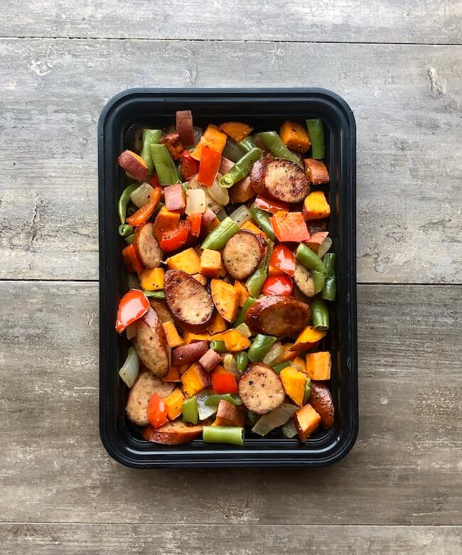

Sweets and Sausage Skillet

Description
Chicken sausage, sweet potatoes, onions, peppers, and green beans roasted together for a quick and easy meal prep dish. This meal is packed with flavor from the sausage and is an easy way to get a big serving of vegetables.
Ingredients
- Twenty-eight ounces of chicken sausage
- Four medium sweet potatoes
- One medium sweet onion
- Two medium red peppers
- Twelve ounces frozen cut green beans
- Two tablespoons oil
- Salt and pepper to taste
Instructions
- Preheat your oven to 425°F.
- Wash and cut your onion, sweet potatoes, and peppers into a medium dice. Cut your sausage into thin slices on a bias.
- In a large bowl, add the onion and sweet potatoes. Toss in 2 tbsp of oil.
- Spread the onions and potatoes out on a large sheet pan. Bake for 12-14 minutes, remove from the oven and turn. Cook an additional 12-14 minutes or until you are happy with the browning on the potatoes.
- Place the sausage and peppers on another sheet pan. Try to get the sausage to lay flat on the pan as this will allow it to brown. Add to the oven and cook for 8-10 minutes then flip and cook an additional 5-8 or until the sausage has browned.
- Cook the green beans in the microwave according to the packaging. Drain as much water from them as possible after cooking.
- This recipe makes 6 servings. Combine in a large bowl, mix, and then divide your ingredients evenly into your 6 containers.